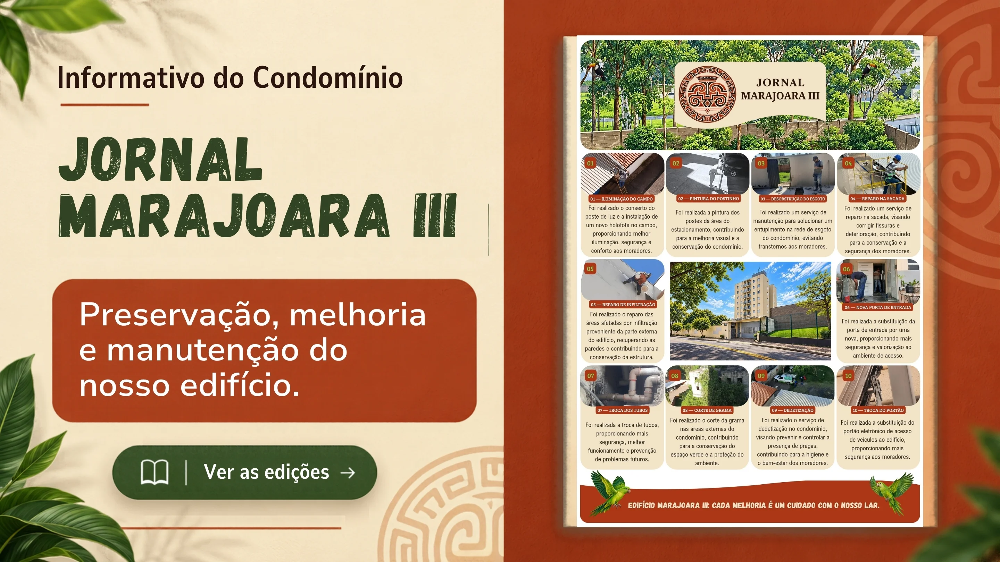

Marajoara III — Portal do Edifício
Jornal Marajoara III
Jornal Marajoara IIINotícias, melhorias e memória do edifício
Abrir o jornal ↗Explore o Marajoara III
Nossa História
Memórias do Edifício Marajoara III · Em preparação

Abrir o jornal ↗Memórias do Edifício Marajoara III · Em preparação